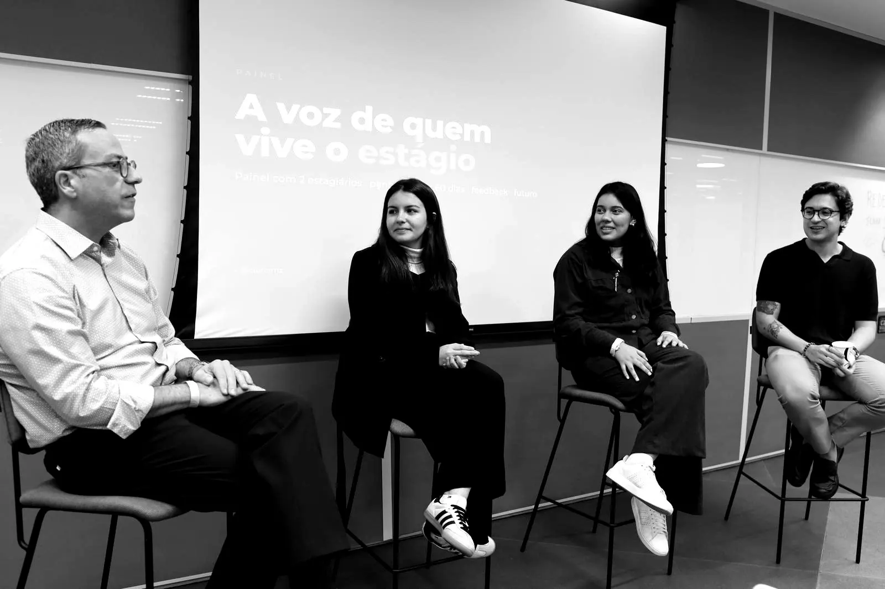
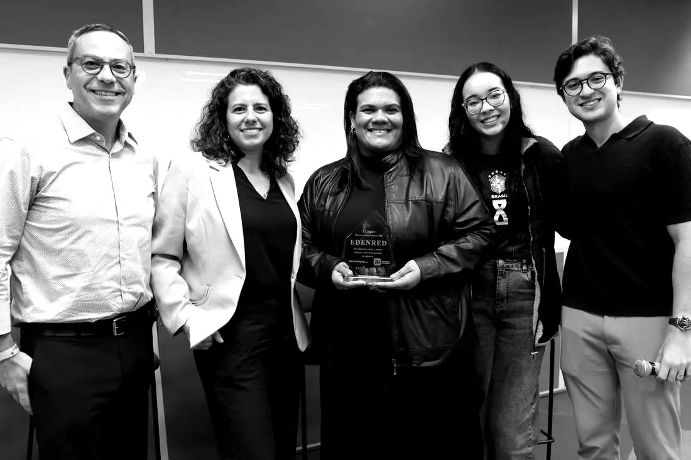
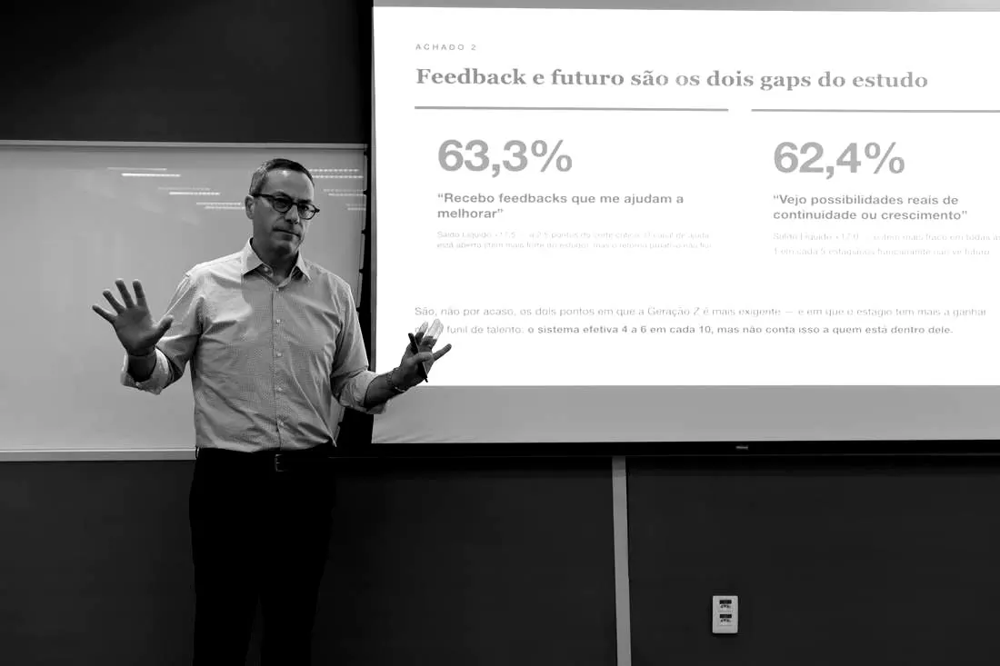
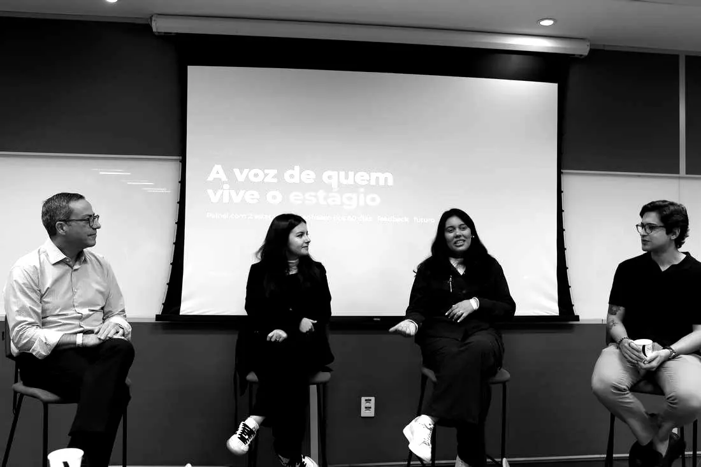
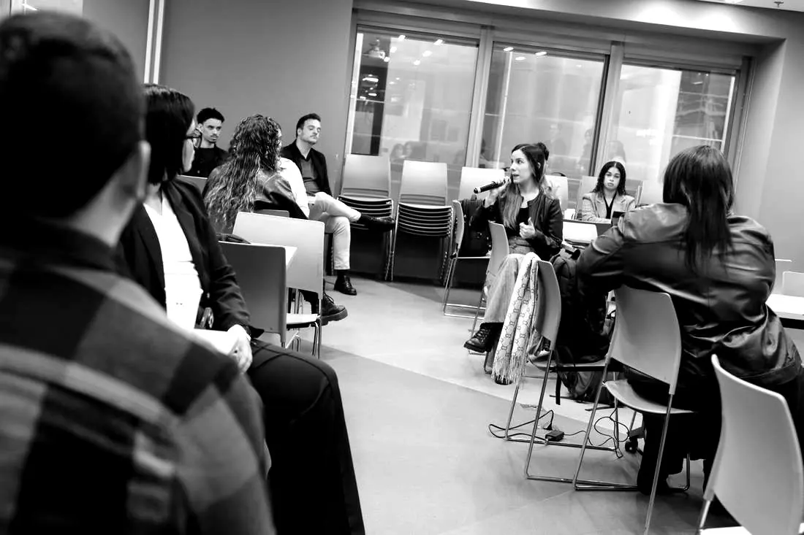
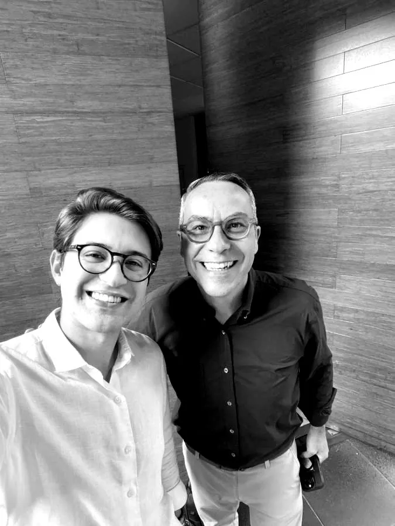
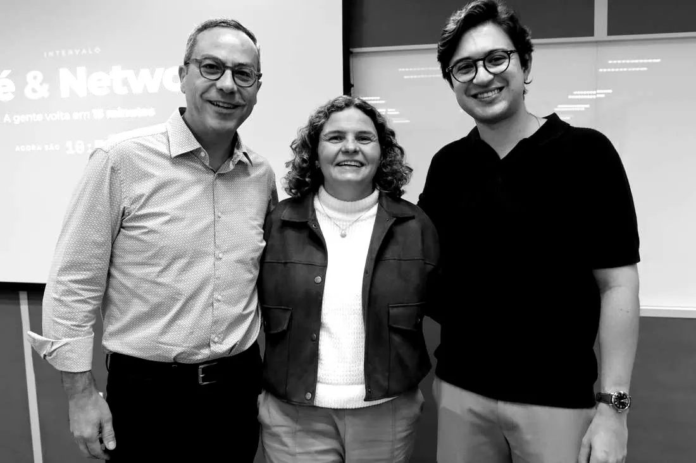
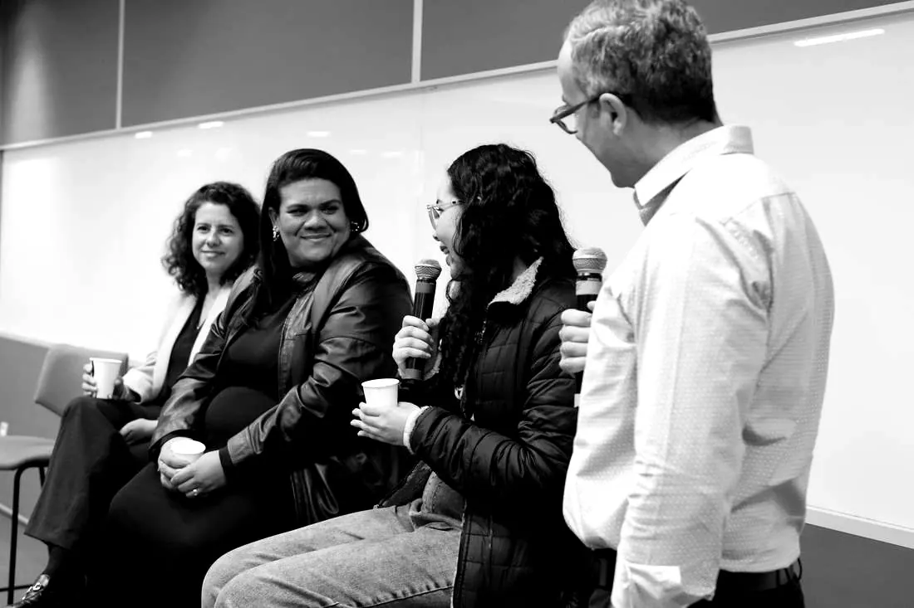
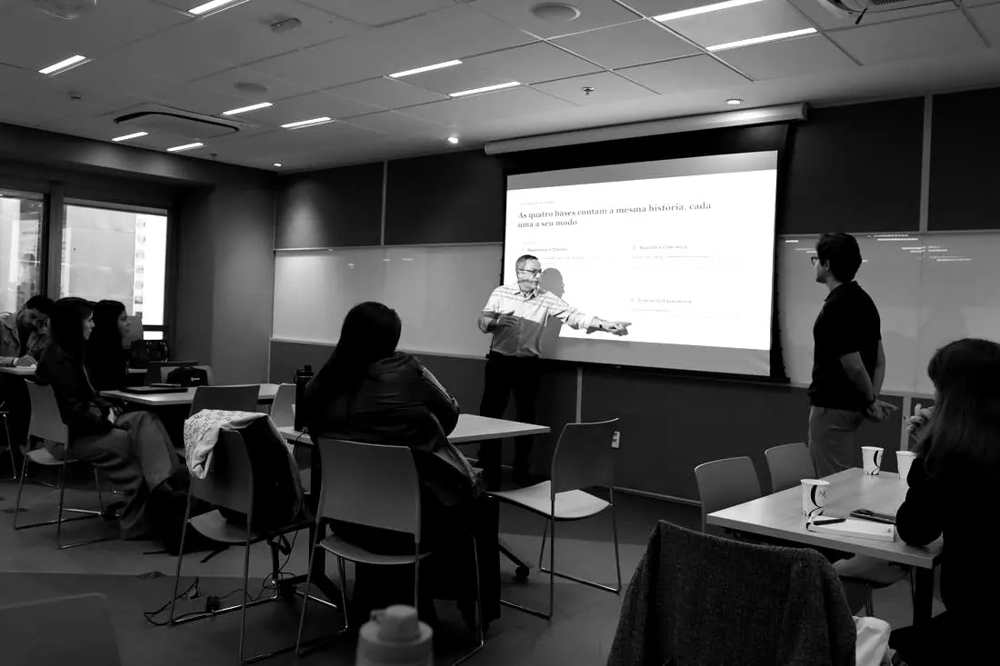

4.991 estagiários mostraram onde o estágio quebra. É no dia 60.
Sete momentos da jornada, de 30 dias a 24 meses. Nenhum dos 18 itens chega à faixa saudável — e a curva desaba exatamente no segundo mês. Aqui estão os resultados completos, abertos, e o que fazer com eles.
“O estágio brasileiro acolhe bem, projeta mal e quebra previsivelmente aos 60 dias — talento que vai embora satisfeito.”

Evento de lançamento · painel “A voz de quem vive o estágio” · junho de 2026
O que os dados dizem, em três frases
Cada pergunta foi lida contra uma régua deliberadamente exigente. O retrato que emerge não é o de um estágio em crise — é o de um estágio uniformemente competente que em nenhum ponto chega a ser excelente.
Ninguém está mal. Ninguém está bem.
Nenhum dos 18 itens alcança a faixa saudável (≥ 75% de favorabilidade) — todos ficam na zona de atenção (60–75%). Melhorar pontos isolados rende pouco: o que move o ponteiro é elevar a experiência como sistema.
Falta retorno e falta horizonte.
Dois itens descem à borda inferior — feedback (63,3%) e visibilidade de futuro (62,4%, o mais fraco do estudo). São exatamente os dois pontos em que a Geração Z é mais exigente e em que o estágio tem mais a ganhar como funil de talento.
O problema não é o quê. É quando.
A variação não está na dimensão avaliada, mas no momento da jornada: o NPS entra em +10 aos 30 dias, despenca para −2 aos 60 e só então se recupera até +8. As quatro bases mergulham juntas no mesmo vale.
“Recebo feedbacks que me ajudam a melhorar”
Saldo Líquido +17,5 — a 2,5 pontos do corte crítico. O canal de ajuda está aberto, mas o retorno proativo não flui: feedback ainda depende da iniciativa de cada liderança.
“Vejo possibilidades reais de continuidade ou crescimento”
O item mais fraco em todas as métricas. 1 em cada 5 não vê futuro — embora 40 a 60% sejam de fato efetivados (ABRES). O problema não é a ausência de futuro: é a falta de comunicação dele.
Por que você pode confiar nisso. Pela favorabilidade (amplitude) e pelo Saldo Líquido (intensidade), os dois últimos lugares são os mesmos — feedback e futuro. A tese sobrevive às duas métricas: a melhor evidência de robustez que um diagnóstico pode ter.
As 18 perguntas — e como cada uma foi respondida
As afirmações percorrem o arco da experiência: enquadrar (Base 1) → vincular (Base 2) → crescer (Base 3) → avaliar (Base 4). Troque a lente para ver cada item pela amplitude ou pela intensidade.
O penhasco dos 60 dias
Aos 30 dias, o encantamento da chegada. Aos 60, o choque de realidade: a rotina se instala e o gap entre o prometido e o vivido fica exposto. É o ponto de maior risco de evasão silenciosa — a quebra empírica do contrato psicológico.
O Saldo Líquido das quatro bases mergulha aos 60 dias e se recupera depois. O vale é um fenômeno da jornada, não de uma dimensão específica.
| Momento | Segurança | Suporte | Desenv. | Síntese |
|---|---|---|---|---|
| M1 · 30 dias | +24,4 | +24,9 | +20,9 | +22,8 |
| M2 · 60 dias | +15,1 | +16,2 | +15,0 | +14,3 |
| M3 · 90 dias | +17,6 | +15,5 | +20,5 | +16,1 |
| M4 · 6 meses | +21,0 | +21,8 | +20,1 | +22,7 |
| M5 · 12 meses | +22,4 | +21,6 | +23,2 | +23,2 |
| M6 · 18 meses | +24,7 | +20,1 | +21,3 | +23,0 |
| M7 · 24 meses | +24,1 | +21,8 | +22,6 | +24,3 |
O sistema produz satisfação sem produzir lealdade — e a distância entre as duas é feita exatamente dos dois gaps. O contingente de 1 em cada 5 “em cima do muro” sobre permanecer (18,4%, a maior fatia neutra do estudo) não é um problema: é a maior reserva de retenção disponível, sensível a gestos de baixo custo.
A porta é estreita — e ninguém avisa quem já entrou
O estágio é a principal porta de entrada formal do mercado de trabalho brasileiro. O sistema converte bem. Só não comunica essa conversão a quem está dentro.
de estudantes aptos a estagiar no Brasil — o tamanho do funil na entrada (ABRES).
conseguem uma vaga. A porta de entrada é valiosa justamente porque é estreita.
dos estagiários são efetivados. O funil converte 4 a 6 em cada 10 — mas o jovem não enxerga esse futuro. A correção é barata: é processo, não orçamento.
Alguém já resolveu isso
Enquanto a média do país trava na zona de atenção, algumas organizações já entregam experiência de excelência. O caso mais sólido da onda 2026 é a Edenred — 1º lugar no Prêmio Melhor Experiência do Estagiário, com a maior base privada do estudo. A prova de que o platô não é destino: é escolha de gestão.

Três frentes. Cada uma com indicador, meta e dono.
Na ordem em que movem o ponteiro. As metas serão validadas em grupos-piloto e acompanhadas prioritariamente em Saldo Líquido.
Blinde o marco dos 60 dias
Trate o onboarding como processo de 2 a 3 meses e recontrate expectativas no fim do 2º mês — atacando o vale onde ele acontece.
Profissionalize a cadência de feedback
Transforme o feedback de evento esporádico em ritual previsível, reduzindo a dependência do gestor individual.
Torne o futuro visível
Explicite trilhas de continuidade e critérios de efetivação, convertendo a grande zona de indecisos em intenção de permanência.
Cada frente é, essencialmente, processo e capacitação de gestores — não orçamento novo. Mesmo sob premissas conservadoras, o custo da quebra (saída precoce + funil de efetivação perdido + reputação) paga muitas vezes o investimento.
O que você leva daqui
O diagnóstico não termina em números. A pesquisa deu origem a um sistema completo de instrumentos — do documento metodológico ao caderno do próprio estagiário. Tudo sem custo. Os materiais sob solicitação chegam por e-mail: nome e e-mail, sem cadastro e sem lista.
Resumo Executivo
A jornada do estágio em uma página: a tese, os três achados, os dois gaps e as três frentes — com indicador, meta e dono. Se você tem cinco minutos, é este.
Documento-Base 2026
O estudo completo em 44 páginas: metodologia, as duas lentes de leitura, as 18 fichas analíticas item a item, a jornada M1–M7 e as referências que ancoram cada régua.
Guia do Líder de Jovens Talentos
Playbook operacional v2.0 para o gestor direto: a rotina mínima, a jornada dia a dia (da chegada ao penhasco dos 60 dias), conversas prontas, régua de maturidade e capítulo de inclusão e equidade.
Workbook do Jovem Talento
O caderno interativo do outro lado da mesa: o que fazer, o que pedir e quando, em cada um dos sete momentos. Preenche no navegador, salva em PDF ou imprime.
Caderno de Templates Editáveis
Os 8 instrumentos do Guia prontos para copiar e preencher: ficha do jovem, checklists, roteiro da primeira tarefa, planos de ação, PDI e conversa de encerramento.
Curadoria de Referências
Autores e publicações organizados nos três eixos frágeis — feedback, futuro e o penhasco — mais o eixo transversal Geração Z. De McKinsey e Gallup a frameworks prontos para virar prática.
Pulso de Experiência
Instrumento local de 4 indicadores — feedback, futuro, NPS e conexão — aplicado nos dias 30, 60 e 90. Espelha os itens frágeis do estudo nacional e vira gestão por meio de régua de leitura e plano de 14 dias.
Ranking e relatórios individuais
Devolutivas por instituição (bases com mais de 20 respondentes), ranking por Saldo Líquido nos setores público e privado e o Prêmio Melhor Experiência do Estagiário.
Devolvemos o dado a quem o gerou
Os resultados foram apresentados em evento para lideranças de RH, com painel de estagiários comentando os achados ao vivo — e uma plateia que topou olhar no espelho. Passar não é o mesmo que prosperar.







Dado bem lido vira prática — e prática vira troféu.
A Edenred recebeu o 1º lugar da edição 2026, com Saldo Líquido de +86,8, favorabilidade de 96,8% e NPS +96,7 entre seus 61 respondentes. O prêmio reconhece programas que provam, com dado, que a excelência na experiência do estagiário é uma escolha de gestão.
O alcance da pesquisa foi possível graças à parceria fundamental da Academia do Universitário, que mobilizou a comunidade universitária e deu voz a milhares de jovens talentos.
Seu programa tem mais de 20 respondentes? Você tem um relatório.
Devolutivas executivas por instituição e setor, o Guia do Líder e o Caderno de Templates para o seu programa de estágio — ou uma conversa sobre a próxima onda da pesquisa.